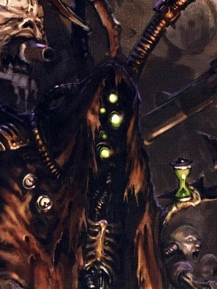

Fabricator-General
| Fabricator-General of Mars | |
|---|---|
Icon Mechanicus of the Adeptus Mechanicus Artwork © Games Workshop | |
 Artwork © Games Workshop Artwork © Games Workshop | |
| Incumbent Xasandera Valdet since early M42 | |
| Adeptus Mechanicus Synod of Mars High Lords of Terra | |
| Style | The Prime Instrument of the Omnissiah's Will |
| Type | Head of the Adeptus Mechanicus; high priest of the Cult Mechanicus |
| Member of | High Lords of Terra (permanent seat); Synod of Mars (speaker) |
| Reports to | The Omnissiah; bound to Terra by the Treaty of Olympus |
| Seat | Olympus Mons, Mars |
| Appointer | The Synod of Mars, usually from the Forge Master of Olympus Mons |
| Term length | For life |
| Formation | Age of Strife (Martian office); 012.M31 (High Lord) |
| First holder | Unnamed, Age of Strife; Zagreus Kane as first of the Adeptus Mechanicus |
| Deputy | Fabricator-Locum |
The Fabricator-General of Mars, also titled the Magos Mechanicus, is the ruler of Mars, the secular head of the Adeptus Mechanicus and the high priest of the Cult Mechanicus. The holder speaks for the Synod of Mars, governs the Forge world that supplies much of the Imperium's arms and ships, and holds a permanent seat among the High Lords of Terra.[1][2]
The office is older than the Imperium. It arose among the tech-priests who ruled Mars during the Age of Strife, and by the time of the Treaty of Olympus in 739.M30 the Fabricator-General was the Martian Parliament's envoy to the Emperor, with a seat on the War Council of the Great Crusade. The Fabricator-General Kelbor-Hal took the Mechanicum over to Horus in 005.M31 and began the Schism of Mars. The loyalist Zagreus Kane was recognised in his place and in 012.M31 became the first Fabricator-General of the reformed Adeptus Mechanicus and its first High Lord.[3]
Under the Treaty, Mars keeps its own laws and faith, and the High Lords cannot appoint or remove its ruler. In the Era Indomitus the office was held by Oud Oudia Raskian until his disappearance after the Fall of Cadia, and then by Xasandera Valdet. The archmagos Belisarius Cawl has been repeatedly urged on the Lord Commander as a candidate; Roboute Guilliman has refused, judging that the appointment would provoke a second Martian civil war.[4]
Powers and duties
[edit]The Fabricator-General's authority rests on two foundations. As ruler of Mars and speaker of the Synod, formerly the Martian Parliament, he or she directs the forges of the Red Planet, its Skitarii legions and its share of the Titan Legions, and presides over the most senior magi of the priesthood. As Magos Mechanicus the holder is the supreme interpreter of the Cult's doctrine, the keeper of its sacred knowledge and the judge of heresy within it.[2]
The office does not command the other forge worlds directly. Their rulers, who also call themselves fabricators-general or bear titles of their own, owe Mars reverence and are bound by its doctrine, but they rule their worlds as they choose. A Fabricator-General's real power over the wider Mechanicus therefore depends on persuasion, tradition and the control of sacred data such as Standard Template Construct fragments as much as on command.[2]
On the High Lords the Fabricator-General speaks for the Mechanicus as an ally rather than a subject. Holders are often the most heavily augmented members of the council; Oud Oudia Raskian, more machine than man, could be brought to the Great Chamber only after works of construction.[5]
History
[edit]Before the Imperium (Age of Strife – 739.M30)
[edit]The tech-priests of the Machine Cult came to rule Mars in the early centuries of the Age of Strife. Their government was a parliament of forge-lords, and the office of Fabricator-General grew within it. The remains of the first Fabricator-General were kept in a sarcophagus that was fought over during the Horus Heresy.[2][a]
The Treaty and the Great Crusade (739.M30 – 005.M31)
[edit]In 739.M30 the Emperor came to Mars and concluded with its priesthood the Treaty of Olympus, by which the Mechanicum supplied his armies and fleets in return for its autonomy, its faith and the Emperor's protection. The Fabricator-General became the Martian envoy to Terra and sat on the War Council of the Great Crusade (c. 798.M30 – 000.M31). Over the following two centuries the office became the leadership of the Mechanicum itself, and Kelbor-Hal, Forge Master of Olympus Mons, rose to hold it.[6][3]

The Schism of Mars (005–012.M31)
[edit]Kelbor-Hal resented the Emperor's ban on forbidden technologies and doubted that the Emperor was the Omnissiah. In 005.M31 Horus's envoy Regulus won him to the rebellion and gave him the means to open the Vaults of Moravec, whose contents spread corrupting scrapcode through the forges. The Schism of Mars that followed (005–006.M31) set Kelbor-Hal's faction, the later Dark Mechanicum, against the forges that held for the Emperor.[3]
The Fabricator-Locum Zagreus Kane, master of the Mondus Occulum forge, survived the scrapcode and the siege of his forge and helped the Imperial Fists under Sigismund carry arms and armour off Mars before the planet was blockaded. He was recognised on Terra as Fabricator-General of the loyalist Mechanicum and joined the Council of Terra, usually represented by his envoy Vethorel. In 012.M31 the loyalists were formally recognised as the Adeptus Mechanicus, separate from the corrupted Mechanicum, and Kane became its first Fabricator-General and first High Lord. He sat on the Grand Council of Reconstruction in 014.M31.[3][5] Kelbor-Hal's fate after the Siege of Terra is unknown.

War of the Beast (544–546.M32)
[edit]During the War of the Beast the Fabricator-General was Kubik, an ally of the Lord High Admiral Lansung. Kubik concealed what Mars knew of the Orks and studied their teleportation technology in secret. After the war the Lord Commander Maximus Thane ordered him to destroy Ullanor by Exterminatus. Kubik instead moved the Ork capital away with captured technology, intending to study it. The discovery of this deceit was the immediate cause of the Beheading of 546.M32. Cornered by the Grand Master of Assassins Drakan Vangorich, Kubik shut himself down rather than let a virus be loosed into the Mechanicus noosphere.[7]
Age of Apostasy (M36)
[edit]In the Reign of Blood the Fabricator-General Gastaph Hediatrix demanded that the High Lords account for themselves and that Goge Vandire be brought to trial. Vandire dissolved the council and declared the Mechanicus traitor. Hediatrix sent regiments of the Martian Tech-Guard to Terra, where they joined several Space Marine Chapters in the assault on the Ecclesiarchal Palace in c. 288.M36, and afterwards helped restore the council and bring Vandire's servants to trial.[8]
Later millennia (M37–M41)
[edit]During the Eighth Black Crusade (999.M37) the Fabricator-General Uixot, an insular ruler, at first refused the Adeptus Custodes' request for aid against traitors holding the Andromax System, and yielded only to a flattering embassy. He also oversaw the addition of great new power systems to the Golden Throne.[9]
Era Indomitus (999.M41 – present)
[edit]At the Thirteenth Black Crusade in 999.M41 the Fabricator-General was Oud Oudia Raskian, who had led investigations into the failing mechanisms of the Golden Throne for over five centuries without a remedy. He opposed the Chancellor Lev Tieron's attempt to release the Adeptus Custodes from Terra. Raskian vanished soon after the Fall of Cadia and was presumed dead. A faction of the Synod then petitioned Cawl's representatives to make him Fabricator-General and to take Mars in a direction more independent of Terra; Cawl declined. Xasandera Valdet later became Fabricator-General and sits among the High Lords.[4][5][b]
List of holders
[edit]| Holder | Tenure | Notes |
|---|---|---|
| Unnamed first Fabricator-General | Age of Strife | Sarcophagus contested during the Heresy[a] |
| Kelbor-Hal | Late Great Crusade – 005.M31 | Declared for Horus; leader of the Dark Mechanicum; fate unknown |
| Zagreus Kane | 005.M31 (loyalist claimant); 012.M31 (recognised) – unrecorded | First Fabricator-General of the Adeptus Mechanicus and first High Lord |
| Kubik | By 544 – 546.M32 | Shut himself down during the Beheading |
| Gastaph Hediatrix | c. 288.M36 | Opposed Goge Vandire |
| Uixot | 999.M37 | Fabricator-General during the Eighth Black Crusade |
| Oud Oudia Raskian | By 999.M41 – c. 000.M42 | Missing after the Fall of Cadia, presumed dead |
| Xasandera Valdet | Early M42 – present[b] | Incumbent |
Timeline
[edit]| Date | Event |
|---|---|
| Age of Strife | Office arises in the Martian Parliament |
| 739.M30 | Treaty of Olympus; the Fabricator-General becomes envoy to Terra |
| 005.M31 | Kelbor-Hal declares for Horus; Schism of Mars; Kane recognised by Terra |
| 012.M31 | Adeptus Mechanicus recognised; Kane its first Fabricator-General and High Lord |
| 546.M32 | Kubik dies in the Beheading |
| c. 288.M36 | Hediatrix's Tech-Guard join the assault on Vandire |
| 999.M37 | Uixot aids the Custodes in the Eighth Black Crusade |
| 999.M41 | Raskian vanishes after the Fall of Cadia |
| Early M42 | Xasandera Valdet becomes Fabricator-General |
See also
[edit]Notes
[edit]- ^ a b The name of the first Fabricator-General is not recorded in sources available outside Mars. The office's origin in the Age of Strife is inferred from the age of the Martian Parliament.
- ^ a b The year of Valdet's accession is not recorded. She is first named as Fabricator-General among the High Lords restored by Guilliman during the Indomitus Crusade, and her accession is dated to the early 42nd millennium on that basis.
References
[edit]- ^ Mechanicum (novel) by Graham McNeill.
- ^ a b c d Warhammer 40,000: Rulebook (6th Edition), pg. 402-403. Games Workshop.
- ^ a b c d Warhammer 40,000: Rulebook (4th Edition), pg. 121. Games Workshop.
- ^ a b Codex: Sisters of Battle (2nd Edition), pp. 13, 15. Games Workshop.
- ^ a b c Bligh, Alan. The Horus Heresy - Book One: Betrayal. Black Library, pp. 17-18.
- ^ Codex Imperialis, pg. 41. Games Workshop.
- ^ Dark Heresy: The Lathe Worlds (RPG), pg. 10.
- ^ Mechanicum (novel) by Graham McNeill.
- ^ Warhammer 40,000: Rulebook (6th Edition), pg. 402-403. Games Workshop.